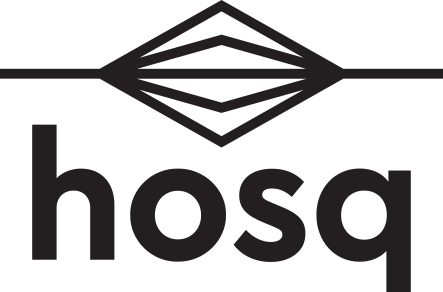

+
−
◎
⛶
?
drag anywhere
— move across the map
click a card
— open a profile
press and hold a card
— pick it up
alt-drag
— pick it up at once
scroll / pinch
— zoom
click a tag
— pull the thread of a shared craft
esc
— release the thread
◎
— see everyone
←
→
‹

✕
✕
Join hosq
Log in